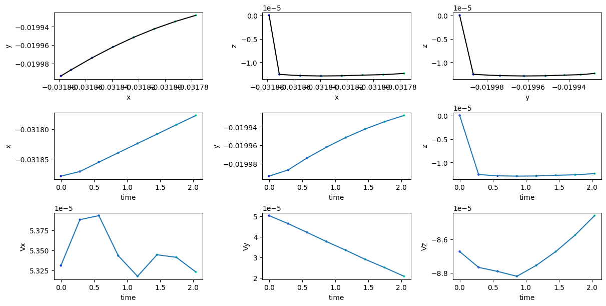
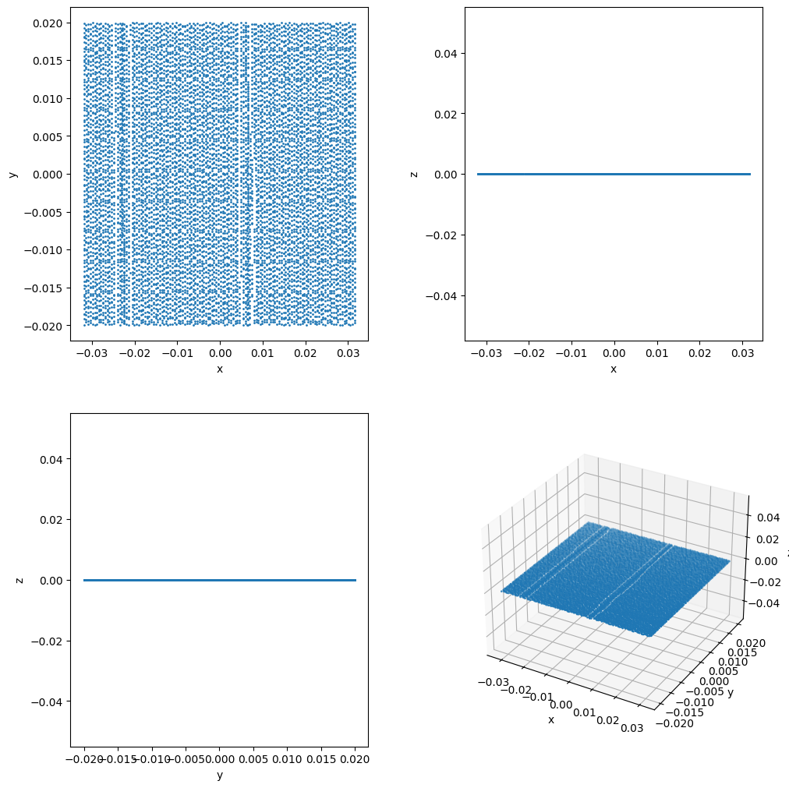

FLEKS Python Visualization Toolkit
flekspy is a Python package for processing FLEKS data.
FLEKS data format
Field: *.out format or AMREX built-in format, whose directory name is assumed to end with “_amrex”
PIC particle: AMREX built-in format
Test particle: binary data format
Importing the package
import flekspy
Downloading demo data
If you don’t have FLEKS data to start with, you can download demo field data with the following:
from flekspy.util.utilities import download_testfile
url = "https://raw.githubusercontent.com/henry2004y/batsrus_data/master/batsrus_data.tar.gz"
download_testfile(url, "data")
Example test particle data can be downloaded as follows:
url = "https://raw.githubusercontent.com/henry2004y/batsrus_data/master/test_particles.tar.gz"
download_testfile(url, "data")
Loading data
flekspy.load is the interface to read files of all formats. It returns a different object for different formats.
file = "data/1d__raw_2_t25.60000_n00000258.out"
ds = flekspy.load(file)
ds
filename : data/1d__raw_2_t25.60000_n00000258.out
variables : ['x' 'Rho' 'Mx' 'My' 'Mz' 'Bx' 'By' 'Bz' 'Hyp' 'E' 'p' 'b1x' 'b1y' 'b1z'
'absdivB' 'r' 'g' 'cuty' 'cutz']
unit : normalized
nInstance : 1
npict : 1
time : 25.6
nIter : 258
ndim : 1
gencoord : False
grid : [256]
The variables can be accessed via dictionary keys:
p = ds.data["p"]
Visualizing fields
#ds = flekspy.load("sample_data/3*amrex")
#dc = ds.get_slice("z", 0.001)
#dc
#f, axes = dc.contour(
# "Bx<(1.5e4)>(-1.5e4) ({rhos0}+{rhos1})<(1.3e21) pS0 uxs0", figsize=(16, 8)
#)
#dc.add_stream(axes[0, 0], "Bx", "By") # Add streamlines to one sub-polt
#f
#dc.add_contour(axes[1, 1], "Bx") # Add contour lines to one sub-polt
#f
Users can also obtain the data of a 2D plane, and visualize it with matplotlib. Below is an example:
# from flekspy.util.utilities import get_ticks
# import matplotlib.pyplot as plt
# import numpy as np
#
# ds = flekspy.load("sample_data/3*amrex")
# dc = ds.get_slice("z", 0.001)
#
# f, axes = plt.subplots(1, 2, figsize=(12, 4), gridspec_kw={"width_ratios": [0.9, 1]})
#
# fields = ["rhos1", "Ey"]
# for ivar in range(2):
# v = dc.evaluate_expression(fields[ivar])
# vmin = v.min().v
# vmax = v.max().v
# ax = axes[ivar]
# nlevels = 200
# levels = np.linspace(vmin, vmax, nlevels)
# ax.set_xlim((-0.006, 0.006))
# ax.set_ylim((-0.003, 0.003))
# ax.set_title(fields[ivar])
# ax.set_ylabel("Y")
# ax.set_xlabel("X")
# cs = ax.contourf(
# dc.x.value, dc.y.value, np.array(v.T), levels=levels, cmap="rainbow"
# )
# ticks = get_ticks(vmin, vmax)
# cb = f.colorbar(cs, ax=ax, ticks=ticks)
# cb.ax.set_yticks(ticks)
#
# dc.add_stream(ax, "Bx", "By", density=1)
Visualizing phase space distributions
# import numpy as np
#
#
# def _unit_one(field, data):
# res = np.zeros(data[("particles", "p_w")].shape)
# res[:] = 1
# return res
#
#
# data_file = "sample_data/cut_*amrex"
# ds = flekspy.load(data_file)
#
# # Add a user defined field. See yt document for more information about derived field.
# ds.add_field(ds.pvar("unit_one"), function=_unit_one, sampling_type="particle")
#
# x_field = "p_uy"
# y_field = "p_uz"
# z_field = "unit_one"
# xleft = [-0.001, -0.001, -0.001]
# xright = [0.001, 0.001, 0.001]
#
## Select and plot the particles inside a box defined by xleft and xright
# plot = ds.plot_phase(
# xleft,
# xright,
# x_field,
# y_field,
# z_field,
# unit_type="si",
# x_bins=64,
# y_bins=64,
# domain_size=(-0.0002, 0.0002, -0.0002, 0.0002),
# )
#
# plot.set_cmap(plot.fields[0], "turbo")
# plot.set_xlim(xmin, xmax)
# plot.set_ylim(ymin, ymax)
# plot.set_zlim(plot.fields[0], zmin, zmax)
# plot.set_xlabel(r"$V_y$")
# plot.set_ylabel(r"$V_z$")
# plot.set_colorbar_label(plot.fields[0], "colorbar_label")
# plot.set_title(plot.fields[0], "Number density")
# plot.set_font({"size": 28})
# plot.set_log(plot.fields[0], False)
# plot.show()
# plot.save("phase_plot_example")
# plot.plots[('particle', z_field)].axes.xaxis.set_major_locator(
# ticker.MaxNLocator(4))
# plot.plots[('particle', z_field)].axes.yaxis.set_major_locator(
# ticker.MaxNLocator(4))
# plot.save(plot_dir+plotname)
Plot the location of particles that are inside a sphere
# center = [0, 0, 0]
# radius = 0.001
# # Object sphere is defined in yt/data_objects/selection_objects/spheroids.py
# sp = ds.sphere(center, radius)
# plot = ds.plot_particles_region(
# sp, "p_x", "p_y", z_field, unit_type="planet", x_bins=64, y_bins=64
# )
# plot.show()
Plot the phase space of particles that are inside a sphere
# plot = ds.plot_phase_region(
# sp, "p_uy", "p_uz", z_field, unit_type="planet", x_bins=64, y_bins=64
# )
# plot.show()
Plot the location of particles that are inside a disk
# center = [0, 0, 0]
# normal = [1, 1, 0]
# radius = 0.0005
# height = 0.0004
# # Object sphere is defined in yt/data_objects/selection_objects/disk.py
# disk = ds.disk(center, normal, radius, height)
# plot = ds.plot_particles_region(
# disk, "p_x", "p_y", z_field, unit_type="planet", x_bins=64, y_bins=64
# )
# plot.show()
Plot the phase space of particles that are inside a disk
# plot = ds.plot_phase_region(
# disk, "p_uy", "p_uz", z_field, unit_type="planet", x_bins=64, y_bins=64
# )
# plot.show()
# # Get the 2D array of the plot.
# for var_name in plot.profile.field_data:
# val = plot.profile.field_data[var_name]
# x = plot.profile.x
# y = plot.profile.y
# plt.contourf(x, y, val)
# plt.show()
# # np.savetxt("data.txt", val)
# # An example to transform the velocity coordinates and visualize the phase space distribution.
# import flekspy, yt
# l = [1, 0, 0]
# m = [0, 1, 0]
# n = [0, 0, 1]
# def _vel_l(field, data):
# res = (
# l[0] * data[("particles", "p_ux")]
# + l[1] * data[("particles", "p_uy")]
# + l[2] * data[("particles", "p_uz")]
# )
# return res
# def _vel_m(field, data):
# res = (
# m[0] * data[("particles", "p_ux")]
# + m[1] * data[("particles", "p_uy")]
# + m[2] * data[("particles", "p_uz")]
# )
# return res
# def _vel_n(field, data):
# res = (
# n[0] * data[("particles", "p_ux")]
# + n[1] * data[("particles", "p_uy")]
# + n[2] * data[("particles", "p_uz")]
# )
# return res
# data_file = "sample_data/cut_*amrex"
# ds = flekspy.load(data_file)
# # Add a user defined field. See yt document for more information about derived field.
# vl_name = ds.pvar("vel_l")
# vm_name = ds.pvar("vel_m")
# vn_name = ds.pvar("vel_n")
# ds.add_field(vl_name, units="code_velocity", function=_vel_l, sampling_type="particle")
# ds.add_field(vm_name, units="code_velocity", function=_vel_m, sampling_type="particle")
# ds.add_field(vn_name, units="code_velocity", function=_vel_n, sampling_type="particle")
# ######## Plot the location of particles that are inside a sphere ###########
# center = [0, 0, 0]
# radius = 0.001
# # Object sphere is defined in yt/data_objects/selection_objects/spheroids.py
# sp = ds.sphere(center, radius)
# x_field = vl_name
# y_field = vm_name
# z_field = ds.pvar("p_w")
# logs = {x_field: False, y_field: False}
# profile = yt.create_profile(
# data_source=sp,
# bin_fields=[x_field, y_field],
# fields=z_field,
# n_bins=[64, 64],
# weight_field=None,
# logs=logs,
# )
# plot = yt.PhasePlot.from_profile(profile)
# plot.set_unit(x_field, "km/s")
# plot.set_unit(y_field, "km/s")
# plot.set_unit(z_field, "amu")
# plot.set_cmap(plot.fields[0], "turbo")
# # plot.set_xlim(xmin, xmax)
# # plot.set_ylim(ymin, ymax)
# # plot.set_zlim(plot.fields[0], zmin, zmax)
# plot.set_xlabel(r"$V_l$")
# plot.set_ylabel(r"$V_m$")
# plot.set_colorbar_label(plot.fields[0], "colorbar_label")
# plot.set_title(plot.fields[0], "Density")
# plot.set_font({"size": 28})
# plot.set_log(plot.fields[0], False)
# plot.show()
Plotting Test Particle Trajectories
Loading particle data
from flekspy import FLEKSTP
tp = FLEKSTP("data/test_particles", iSpecies=1)
Particles of species 1 are read from ['data/test_particles']
Number of particles: 10240
Obtaining particle IDs
Test particle IDs consists of a CPU index and a particle index attached to the CPU.
pIDs = tp.getIDs()
Reading particle trajectory
traj = tp.read_particle_trajectory(pIDs[10])
print("time:\n")
print(traj[:, 0])
print("x:\n")
print(traj[:, 1])
time:
[0. 0.2865431 0.5730862 0.86495394 1.15735388 1.45110583
1.74436951 2.03866649]
x:
[-0.03138601 -0.03137759 -0.03136045 -0.0313433 -0.03132602 -0.03130875
-0.03129143 -0.03127424]
Getting initial location
x = tp.read_initial_location(pIDs[10])
print("time, X, Y, Z, Ux, Uy, Uz")
print(f"{x[0]:.2e}, {x[1]:.2e}, {x[2]:.2e}, {x[3]:.2e}, {x[4]:.2e}, {x[5]:.2e}, {x[6]:.2e}")
time, X, Y, Z, Ux, Uy, Uz
0.00e+00, -3.14e-02, -1.86e-02, 0.00e+00, 5.87e-05, 3.70e-05, 3.98e-06
Plotting trajectory
tp.plot_trajectory(pIDs[0])

Reading and visualizing all particle’s location at a given snapshot
ids, pData = tp.read_particles_at_time(0.0, doSave=False)
tp.plot_loc(pData)

Selecting particles in a region
def fselect(tp, pid):
pdata = tp.read_initial_location(pid)
# Find all particles with x coordinate larger than 0
inregion = pdata[FLEKSTP.ix_] > 0
return inregion
pselected = tp.select_particles(fselect)
Saving trajectories to CSV
tp.save_trajectory_to_csv(pIDs[0])